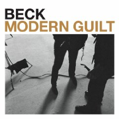

|
Sigh - if Beck weren't so prolific I could produce a sampler without one of his songs. The good news is that I'm wearing Jennifer down. She's finally come around on Beck and actually got this album this year and likes it. A group of us went to see Beck at Roy Wilkins this fall. He was solid as usual, but unfortunately the sound wasn't great. The highlight of the evening was when a Current contest winner game on stage to play tamborine during "Black Tamborine". He was in pure Beck attire - aqua snow suit with racing stripes down the side, lightly tinted aviator style shades, and a sweatband pushing up his curly hair. The dude could move too! At 44 minutes, Modern Guilt is one of the most terse Beck albums. Still - it's very solid. Just ask Jennifer. |
 |